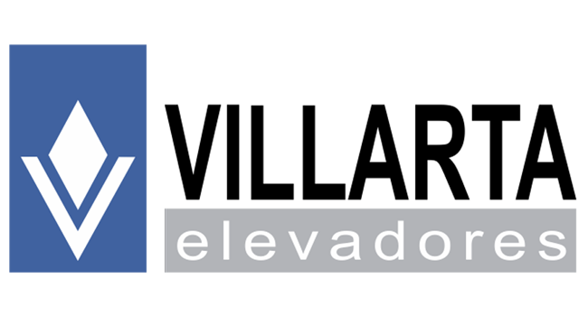
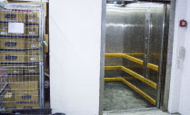
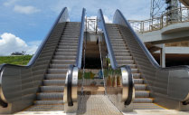
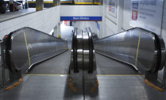

A VILLARTA nasceu em 1985 na cidade de São Paulo, sob a denominação Elevadores Villarta
Ltda. Inicialmente, a empresa estava em uma garagem e era especializada apenas em manutenção de elevadores
multimarcas, mas, desde então, a VILLARTA cresceu e hoje tem posição de destaque em manutenção, modernização e
novas instalações de elevadores, escadas e esteiras rolantes, e plataformas de acessibilidade em todo Brasil,
sejam de equipamentos VILLARTA ou de outras marcas.
ELEVADORES DE PASSAGEIROS
 Elevadores de passageiros Villarta, são projetados e fabricados para atender os
passageiros com o máximo de conforto e segurança. Temos várias opções de modelos de acabamento, inox, madeira,
panorâmico e modelos totalmente customizados. Podendo ser aplicado em prédios comerciais, residenciais,
residências e indústrias.
Elevadores de passageiros Villarta, são projetados e fabricados para atender os
passageiros com o máximo de conforto e segurança. Temos várias opções de modelos de acabamento, inox, madeira,
panorâmico e modelos totalmente customizados. Podendo ser aplicado em prédios comerciais, residenciais,
residências e indústrias.
ELEVADORES PARA ACESSIBILIDADE
Todo empreendimento, seja comercial, público ou residencial, deve sempre
garantir o conforto e a acessibilidade de todos os seus usuários. Por isso, a VILLARTA produz Elevadores
adequando seu projeto do ponto de vista legal e social. Somos reconhecidos por órgãos fiscalizadores como GEM
(Rio de Janeiro), SEGUR (São Paulo), entre outras instituições regulatórias.
ELEVADORES PARA CARGA

Nossos elevadores de carga são projetados exclusivamente para cada cliente, para
atender o tamanho e a capcidade de carga exata que o cliente necessita. Transporte de diversos tipo de carga,
opção de carregamento com empilhadeira, opção de transporte da carga com a empilhadeira e até para transportar
automóveis.
ELEVADORES UNIFAMILIAR
São elevadores para residências, com normativa própria, são equipamentos
desenvolvidos para atender as necessidades de elevação e acessiblidade da residência. Podem receber acabamento
customizado para armonizar com a arquitetura do local.
ESCADA ROLANTE COMERCIAL
Projetada e fabricada para atender exatamente a necessidade do seu
empreendimento, com opções de degraus de 600, 800 e 1000mm de largura, o que influencia na capacidade de
transporte da escada. Como opções inovadoras temos o *VVVF e sistema de paralisação total da escada quando não
houver utilização por um determinado período, voltando a funcionar normalmente, e sem arranques bruscos,
quando um passageiro vai utilizar.
ESCADA ROLANTE REAVY DUTY
 Além de ter todos os benefícios da Escada Rolante Comercia, é fabricada com
componentes robustos, engrenagens e acabamentos reforçados para locais que recebam um fluxo de pessoas bem
alto e necessitam de um equipamento verdadeiramente reforçado. Geralmente utilizadas em estações de metrô e
estádios de futebol.
Além de ter todos os benefícios da Escada Rolante Comercia, é fabricada com
componentes robustos, engrenagens e acabamentos reforçados para locais que recebam um fluxo de pessoas bem
alto e necessitam de um equipamento verdadeiramente reforçado. Geralmente utilizadas em estações de metrô e
estádios de futebol.
ESCADA ROLANTE EXTERNA

É um equipamento totalmente diferenciado, desde o projeto, matéria prima e
fabricação. O equipamento é preparado para ficar do lado externo do empreemdimento, podendo receber sol e
chuva diariamente sem problemas futuros.
ESTEIRA ROLANTE

Com opção de configuração semelhante as escadas rolantes (comercial, heavy duty
e externa), as esteiras rolantes não tem degraus e sim paletes, que são superfícies planas, podendo o usuário
transportar carrinhos de compras, malas e outros itens impossibilitados pela escada rolante.
PLATAFORMA DE ACESSIBILIDADE
 São equipamentos mecanicamente mais simples, mas com a funcionalidade completa
para atender pessoas com necessidades especiais. Limitada a 4 metros de desnível, a plataforma está apta a
atender cadeirante e um acompanhante, pessoas com mobilidade reduzida ou pessoas com outros tipos de
deficiência.
São equipamentos mecanicamente mais simples, mas com a funcionalidade completa
para atender pessoas com necessidades especiais. Limitada a 4 metros de desnível, a plataforma está apta a
atender cadeirante e um acompanhante, pessoas com mobilidade reduzida ou pessoas com outros tipos de
deficiência.
ELEVADOR PNE
 É um equipamento com características parecidas com o elevador de passageiros,
porém limitada a utilização para pessoas portadoras de necessidades especiais, é o equipamento que se enquadra
para o local que precisa se adequar à acessibilidade e tem mais de 4 metros de desnível, ficando impossível a
utilização da plataforma elevatória.
É um equipamento com características parecidas com o elevador de passageiros,
porém limitada a utilização para pessoas portadoras de necessidades especiais, é o equipamento que se enquadra
para o local que precisa se adequar à acessibilidade e tem mais de 4 metros de desnível, ficando impossível a
utilização da plataforma elevatória.
ELEVADOR UNIFAMILIAR
 Também com similar aparência com o elevador de passageiros, é de utilização
restrita para residências, sem opção de utilização comercial ou para atender acessibilidade. Elevador ideal
para residências que precisam de uma locomoção entre pavimentos com mais facilidade.
Também com similar aparência com o elevador de passageiros, é de utilização
restrita para residências, sem opção de utilização comercial ou para atender acessibilidade. Elevador ideal
para residências que precisam de uma locomoção entre pavimentos com mais facilidade.